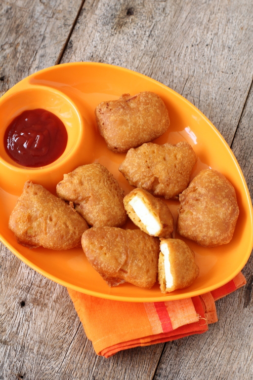

Go Back To Homepage
Paneer Pakode

More on Paneer Pakode
Pakoda recipes are a common snack dish prepared in almost every Indian household.
Almost all vegetables are used to prepare this delicacy recipe and served as snacks, side dishes and even in curries.
Ingredients Required
- 1 tsp ginger garlic paste
- 1 tsp kashmiri red chili powder
- 1 tsp chaat masala
- 1 tsp kasoori methi / dry fenugreek leaves
- tsp salt
- 9 cubes of paneer / cottage cheese (cubed)
Steps
- Firstly, in a large mixing bowl take 1 tsp ginger garlic paste, tsp red chilli powder, tsp chaat masala, 1 tsp kasoori methi and tsp salt.
- Mix well to make a paste.
- Now add 9 cubes paneer and slowly cover the paneer with masala paste. Keep aside.
- Prepare besan batter by taking cup gram flour and 2 tbsp rice flour in a mixing bowl.
- Also add tsp turmeric, tsp chili powder, tsp hing, tsp chaat masala and tsp salt.
- Mix all the ingredients well. Add cup water and make a smooth batter.
- Make a smooth batter without any lumps. Also, add a pinch of baking soda and mix slowly. Don't mix too much.
- Dip the spicy paneer in the prepared besan batter and coat it completely.
- Fry in hot oil and stir occasionally and fry on both sides till they turn golden brown.
- Paneer Pakode are ready to be served.